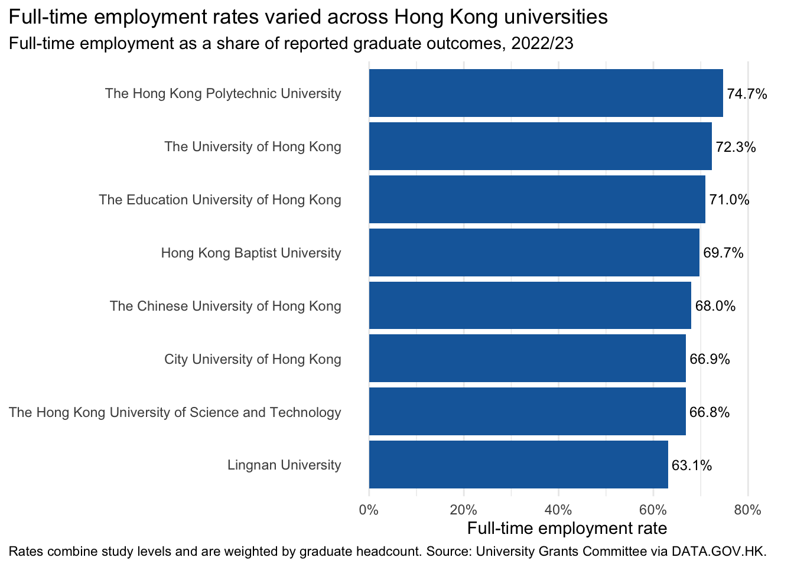

14Aggregated Official Data: Hong Kong Graduate Employment
14.1 Why this case comes later
The NBIM chapters use a relatively simple holding-level grain. This official Hong Kong dataset is harder: full-time employment is split into many occupation rows, while every other employment status is stored in one row labelled “Not in Full-time Employment.” The row structure is nested and uneven.
That complexity is pedagogically valuable once students can already filter, group, join, and validate. It teaches a central data-journalism lesson: a tidy- looking table can still contain incompatible levels of aggregation.
For full-time employment, occupation contains many detailed categories. For Further studies, Others, Underemployed, and Unemployed, the occupation is always “Not in Full-time Employment.”
Therefore, one raw row is best described as:
one headcount cell for an academic year, university, study level, employment status, and—only for full-time employment—occupation.
The data mix two grains:
flowchart TD
A["Year × university × level"] --> B["Full-time employment"]
A --> C["Other status"]
B --> D["Many occupation rows"]
C --> E["One 'Not in Full-time Employment' row"]
Counting rows would count occupation categories, not graduates.
14.5 Collapse to comparable status cells
First sum the detailed full-time occupation rows so every status has the same grain:
One row now represents one year–university–level cohort. The denominator is the sum of mutually exclusive employment statuses, after full-time occupations have been collapsed.
This calculation weights each study-level cohort by its graduate headcount. The following tempting alternative is not equivalent:
cohorts |>filter(year_start == latest_year) |>summarise(unweighted_mean_ft_rate =mean(ft_rate),.by = university )
An unweighted mean gives a small cohort the same influence as a large cohort. Use the rate-of-sums for an overall graduate rate unless the research question explicitly concerns the typical programme-level rate.
14.8 Visualize without overclaiming
latest_university |>ggplot(aes(x = ft_rate, y =fct_reorder(university, ft_rate))) +geom_col(fill ="#1769AA") +geom_text(aes(label =percent(ft_rate, accuracy =0.1)),hjust =-0.1,size =3.2 ) +scale_x_continuous(labels =label_percent(),limits =c(0, max(latest_university$ft_rate) *1.12) ) +labs(title ="Full-time employment rates varied across Hong Kong universities",subtitle =str_wrap(paste0("Full-time employment as a share of reported graduate outcomes, ", latest_year,"/",str_sub(as.character(latest_year +1), 3, 4) ),width =85 ),x ="Full-time employment rate",y =NULL,caption =paste("Rates combine study levels and are weighted by graduate headcount.","Source: University Grants Committee via DATA.GOV.HK." ) ) +theme_minimal() +theme(panel.grid.major.y =element_blank(),plot.title.position ="plot",plot.caption.position ="plot",plot.caption =element_text(hjust =0, size =8.5) )

The chart is descriptive. Universities differ in study levels, disciplines, student populations, response or reporting conditions, and labour-market pathways. The data do not establish institutional quality or a causal effect of attending one university.
14.9 A denominator within full-time employment
Suppose the story concerns graduates recorded as authors, journalists, and related writers. The relevant denominator is full-time employed graduates, not all graduates:
journalism_share <- employment |>summarise(journalists =sum( headcount[ status =="FT employment"& occupation =="Authors, Journalists and Related Writers" ] ),all_ft =sum(headcount[status =="FT employment"]),.by =c(academic_year, university, level) ) |>mutate(share_of_ft = journalists / all_ft)journalism_share
The numerator and denominator now refer to the same status and cohort. A different denominator would answer a different question.
14.10 Independent task
Choose either unemployment, underemployment, or further study. Produce:
a diagram or sentence defining the raw grain;
a correctly collapsed cohort table;
a weighted university-year rate;
a comparison with the unweighted mean of cohort rates;
three validation checks; and
a 150-word editor’s note explaining why the result should not be presented as a causal university league table.